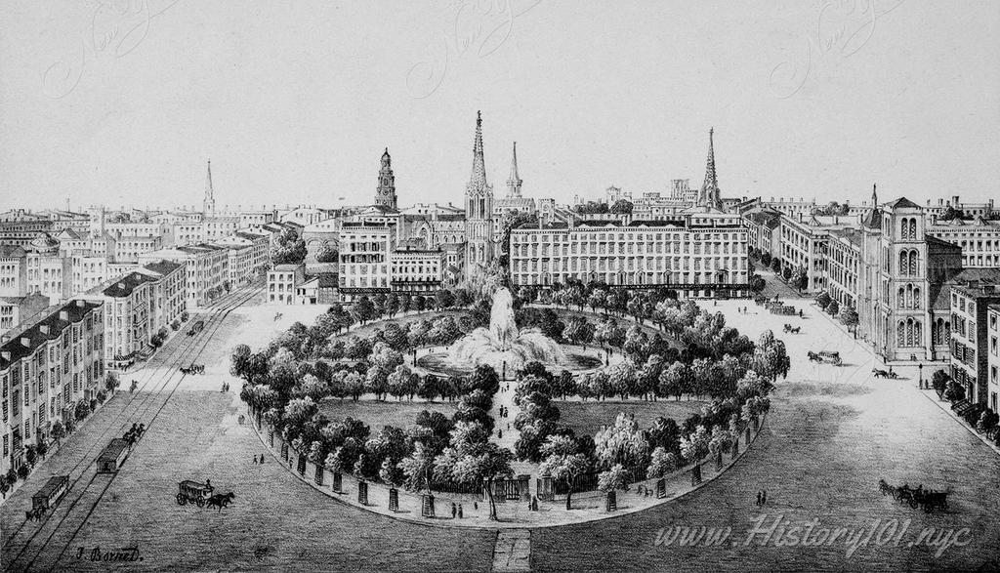
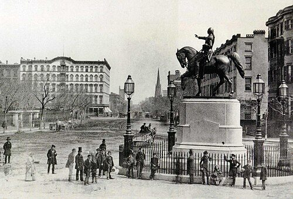
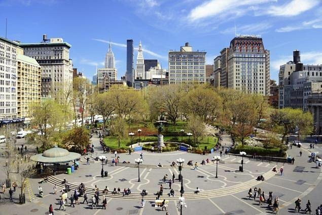
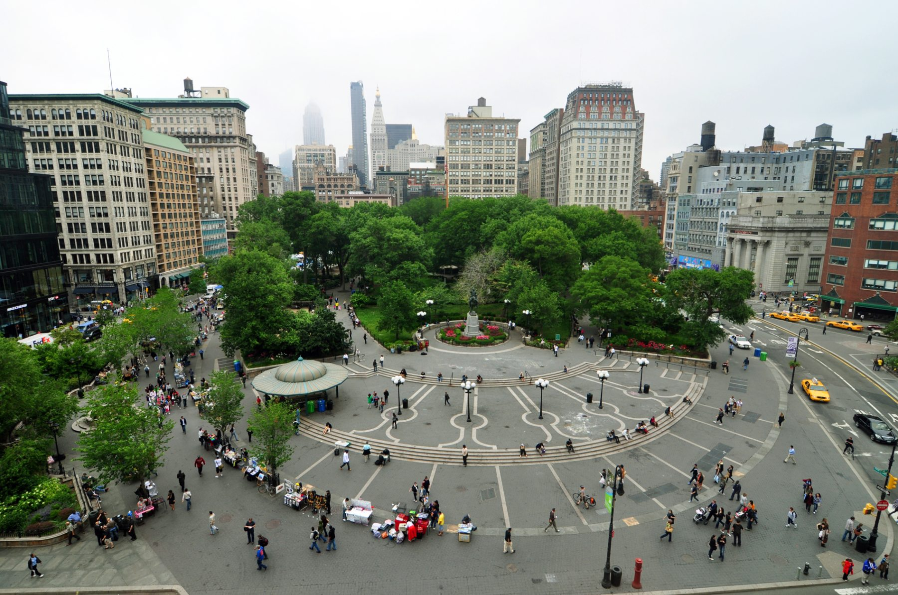

DRAWN FROM OBSERVATION · NOT TO SCALE 14TH–17TH ST, MANHATTAN
WHAT BRINGS YOU HERE?
Everyone has a different reason. Pick one to find yours on the map.
UNION SQUARE / THEN & NOW

1839 / EARLY UNION SQUARE
A new public park.
Union Square opened to the public in 1839, where Broadway and Fourth Avenue met. This nineteenth-century illustration shows an early landscape of paths, trees and surrounding streets. The drawing’s exact date is unconfirmed.

1856 / WASHINGTON MONUMENT
A landmark in the square.
The equestrian statue of George Washington was dedicated in 1856. It became a recognizable landmark as the square evolved into a place for everyday encounters and public gatherings. The image itself is undated.

TODAY / THE PARK FROM ABOVE
A shared meeting point.
From above, you can see the lawns, pathways, plaza, and surrounding streets working together. This is the same place I explored on foot, where people come for different reasons.

2020s / UNION SQUARE TODAY
A Multifunctional Square
Today, Union Square is much more than a park. Some people stop by for the farmers market, others come to meet friends, shop, or just pass through on the subway. Since 1976, the Greenmarket has been one of the many reasons people gather here.
01 / 04
History reference: History101 NYC · Images are not aligned to identical camera angles